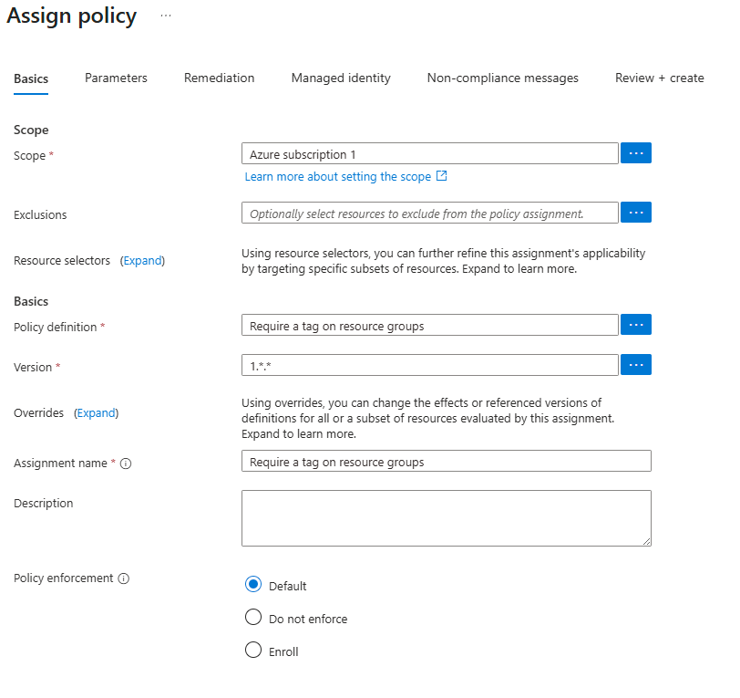
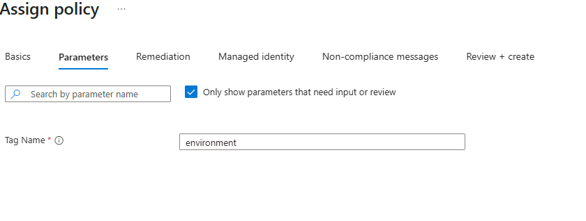
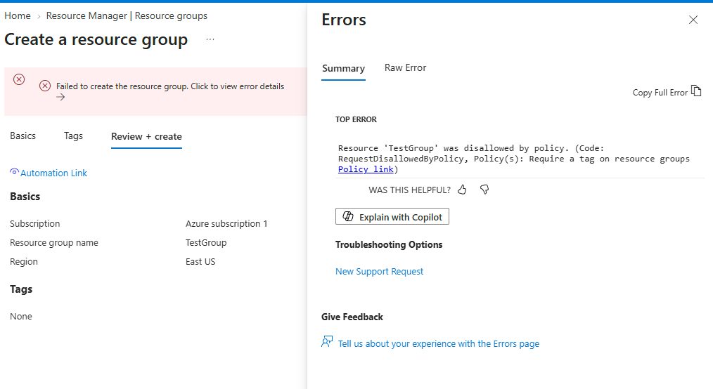
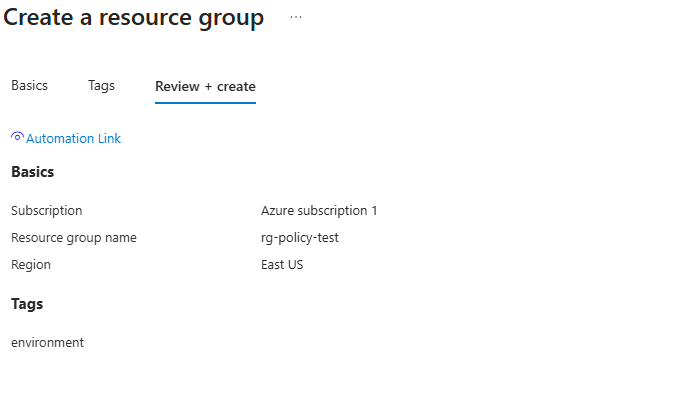

Assigning a built-in Azure Policy that requires an environment tag on every resource group in the subscription, then proving it actually enforces by deliberately failing a creation without the tag and succeeding once the tag is present. Governance at the subscription scope, not the resource group scope, since resource groups themselves can only be governed from above.
Proved the policy actually enforces, rather than just assuming assignment equals enforcement.




"If you can build it again tomorrow without looking at yesterday's code, you've learned it. If you need to copy and paste it again, you've only completed a tutorial."
I am learning Infrastructure as Code deliberately, specifically Terraform and Bicep, rather than treating them as copy-paste snippets. The code below reflects actual understanding of each resource, not just reproduced boilerplate.
Policy assignments are a native ARM resource type and can target the subscription directly as the deployment scope, which matches the correction from earlier: this has to be assigned above the resource group level to actually govern resource-group creation.